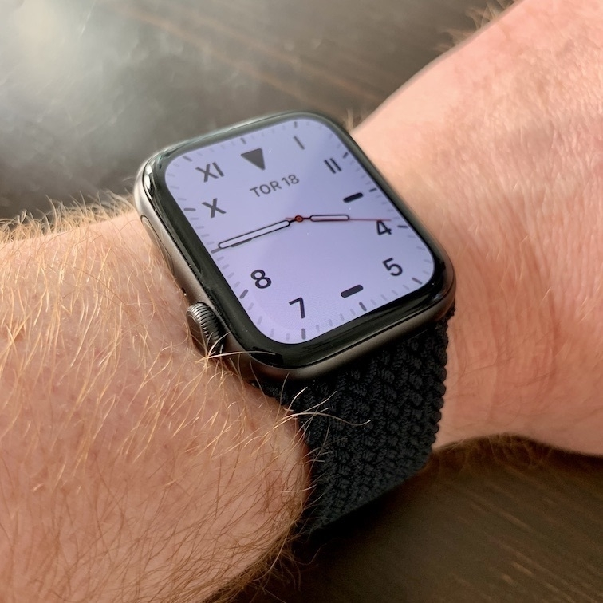

Are you ready for CSS naked day?
Finished reading: Joyland by Stephen King 📚
And then WWDC 2021 was announced.
…June 7 through 11, in an all-online format.
Just watched “Best-Laid Plans”, the latest episode of For All Mankind.
Another great episode in what is my favorite show on tv now.
🛰🚀👨🚀📺
Exiting to see that SvelteKit is in public beta now.
So go read the docs and get started!
Finished reading: Tiamat’s Wrath by James S. A. Corey 📚
I watched Howl’s Moving Castle with my youngest daughter this morning.
We’ve now watched all the movies of Hayao Miyazaki that she’s old enough to watch.
Watching these movies with her, some of them many times, is a memory I’ll bring with me long after she has left home. ❤️
Talking about the Apple Watch ⌚️, yesterday I got my first Braided Solo Loop band.

The band fits perfectly and is really comfortable. A bit expensive, but so have some of the other bands been.
I’m really glad I looked at the sizing guide at Daring Fireball.
I really enjoyed reading The iconic watches that inspired Apple Watch faces.
If you enjoy your Apple Watch too, I’d give it a read.
Finished reading: Norse Mythology by Neil Gaiman 📚
Asko writes:
“I don’t want to learn nor use a million different tools. I don’t want to know a bit about everything and a lot about nothing.”
Has frontend become much more complex the last couple of years? Absolutely!
Finished reading: Star Wars: The High Republic: Light of the Jedi by Charles Soule 📚
My dad died on Thursday. He was found dead in his bed at the hospital.
He’d been sick for a long time, with cancer, but he had beaten every prognosis many times. Not anymore.
My dad was a good dad.
My son (8) had a widget showing a single number on his iPhone.
I asked what it was.
“It’s the number of days until Trump is gone.”
Finished reading: End of Watch by Stephen King 📚
Currently reading: Star Wars: The High Republic: Light of the Jedi by Charles Soule 📚
Finished reading: Finders Keepers by Stephen King 📚
Finished reading: Star Wars: Thrawn by Timothy Zahn 📚
So after playing Ori and the Blind Forest for some time, my boy came into the room.
Now he’s playing it. 😉
So far Overcast is the only iOS app I run regularly on the M1 Air.
Makes me want a “real” Mac app soon.
Ori and the Blind Forest
Ori and the Will of the Wisps features on many best of year lists for Switch in 2020. Having not played the first game in the series, that’s where I started.
I remember buying Ori and the Blind Forest at launch, but never playing it.
An hour into the game, I’m mad at myself for not starting this Metroidvania game sooner.
This game looks and feels great!
I’ve never had less time to play games than in 2020, but I have to find time to play this. It’s so much fun.
🎮
I liked this trip down the memory lane. Why do we call it a home page?
The first Editor’s draft of W3C Accessibility Guidelines (WCAG) 3.0 was published today. 🎉
I’m really excited to begin reading this.
Today is ARM Mac 💻 day!
Even though Apple events have changed a lot this year, it’s still fun to watch.
That so many millions of Americans would vote for a white supremacists supporter, is quite frankly puzzling to me.
They want to reelect a man that put children in cages.
IN CAGES!
How can people support a piece of shit like that?
Finally got the possibility to subscribe to Apple One.
I was already paying for all the services in the bundle, and this way I save a small amount every month.
I can still remember when Bush was elected president in 2000 and we asked “how could USA stoop so low?”.
In 2016 we got our answers.
With Biden looking likely to win the 2020 election, I’m hopeful.
Please don’t disapoint me.
Rich Harris asks What’s the deal with SvelteKit? over on the Svelte blog.
It’s a great introduction in case you didn’t watch the Svelte Summit videos last month.
Developing with Snowpack is a great experience. Looking forward to this.
The results this morning was not what I would call good news.
As the day has progressed, there seems to be some hope for a Biden victory still. But Trump got far too many votes.
We are near to the end of the election, but it still feels far away from a new direction for the US.
I’m currently making a UI component using Canvas.
Never worked much with Canvas before, but it’s really fun exploring.
Like noticing there’s a built-in function doing the same as the custom one I wrote. 🙃
Guess I need to concentrate more.
Right now I can’t even remember if I took part in the first one, but this one starts with the word “dreary”.
The dictionary told me that _dreary_means “depressingly dull and bleak or repetitive”.
Luckily, not much in my life fits that description.
Watching the Apple event last night, I was once again disappointed that the HomePod isn’t available in Norway.
No change with the HomePod mini.
Is it time to bite the bullet and just get it overseas?
New music out from Zeal & Ardor
This morning I woke up and saw an alert on my phone that there where a new song called “Tuskegee from Zeal & Ardor out on Apple Music.
The track itself is amazing. I’ve listened to it on repeat for the last hour.
I quickly found out that the track is from the upcoming EP Wake of a Nation.
And not only that, two more tracks “I can’t Breathe” and “Vigil” had also been released.
With lyrics like “I can’t breathe, it’s a cellphone, please don’t shoot” and “I need to get home, I’m on my knees begging please” I guess there is no prize for guessing the theme of this EP.
This is a strong contender for the best record of the year for me. Even though I’ve only heard three out of six songs of the EP.
If you want a simple overview of what’s new in WCAG 2.2 compared to WCAG 2.1, Adrian Roselli wrote what’s new in WCAG 2.2 to address that.
Currently reading: The Relentless Moon by Mary Robinette Kowal 📚
Finished reading: Prelude To Foundation by Isaac Asimov 📚
WWDC 2020
The keynote this year surprised me. I didn't expect the prerecorded video to be as exiting as the live one.
But I liked this. It went by really quickly, going from one great announcement to the next, never dull.
I haven't forgotten the embarrassing Hey debacle and I hope that Apple will change some of their App Store policies.
Do I want an ARM Mac? Yes, yes I do.
Seems like there is a path forward for Hey and the App store.
Late Friday night, on June 19th, Apple’s App Store Review Board surprised us by approving the pending bug fixes to the HEY iOS app that were held up all last week
I continue to use and like Hey and this is good news.
I got my Hey invitation today.
I’ve been playing with it a bit today. It’s different, but I think I like it.
Hope Apple come to their senses regarding the App Store rejection.
I published my first post using iA Writer yesterday. The experience was good, although dedicated blog software it's not.
Not that I want it to be.
It made a title automatically, which I understand, but is something I rarely use. Since I tend to write shorter posts.
But overall a nice experience.
My editor of choice for markdown is iA Writer and has been for years.
When Manton posted that they added Micro.blog publishing I was thrilled.
Then I stopped posting for a while. You know, pandemic and all.
So this is my first post using iA Writer directly.
Currently reading: The Aleph Extraction by Dan Moren 📚
WWDC is happening June 22.
Calendar updated!
Jason Pamental has a new project where he tries to create a good web based ebook.
Known for his web typography, this is a good resource to learn more about the possibilities with web fonts today.
Read the book at mobydick.wales.
To think that you can create one solution that will look and work the same everywhere is a fantasy.
— Jason Pamental
💬
I’ve seen things you people wouldn’t believe. Attack ships on fire off the shoulder of Orion. I watched C-beams glitter in the dark near the Tannhauser gate. All those moments will be lost in time… like tears in rain… Time to die.
Batty from Blade Runner
💬
As a developer I read so much more code than what I write.
So this from Brent Simmons is spot on:
…I’d write code the way I normally would, with clarity in mind first.
Jeremy Keith writes: Apple’s attack on service workers
This is not a minor change. This is a crippling attack on service workers, a technology specifically designed to improve the user experience for return visits, whether it’s through improved performance or offline access.

Nintendo shared another Nintendo Direct today.
Lots of interesting games, even if some are older. Bioshock, Borderlands, X Com 2, Bravely Default 2, Burnout Paradise and more.
I’ll be buying some games in the near future. 🎮
I haven’t watched the Road to Playstation 5 video that Sony published earlier today yet.
Considering I don’t use my PS4 at all after buying the Switch, I’m not sure I’ll buy it on launch day like I did with the previous consoles. 🎮
And Apple knew I wanted a new iPad Pro with LiDAR Scanner and trackpad support in iPadOS
So according to Apple the New MacBook Air has more to love and is now just $999
I’m on my third play through of Breath of the Wild.
This resonated with me.
It messed me up. In some ways you might say it ruined video games. Other video games.
Who’s ready for WWDC 2020 in June?
Norway closing down
As all schools and kindergartens closed in Norway yesterday, I’m today at home with my three kids. The work my wife does has been deemed critical by the government, so she’s at work.
I work for a company that creates an LMS. An LMS that has millions of users. Users that are moving to being online doing school work all day, instead of just parts of the day.
Which means all the performance improvements that I’ve been working on for work, suddenly became more important.
So here I am, at home, with three kids, and desperately wanting to help out at work but can’t.
At least not as much as I’d like.
Strange times this.
There has been much written about “CSS4” lately.
I agree with Louis Lazaris that CSS4 is a Bad Idea.
Honeypot is back with Vue.js: The Documentary.
I really enjoyed their Ember.js: The Documentary last year.
Currently reading: The Dark Tower III: The Waste Lands by Stephen King 📚
Local First, Undo Redo, JS-Optional, Create Edit Publish by Tantek Çelik.
I’d like to be able to construct an entire post on a mobile device, like a photo post with caption, people tags, location tag etc. all locally, offline, without any need to access a network.
Interesting.
Goodbye, Clean Code by Dan Abramov is something I think many developers can identify with.
Swift Playgrounds for the Mac.
I did not see that coming. I wasn’t expecting this until WWDC, if at all.

So far today I’ve had about three ideas that I’ve wanted to blog about. And as usual I haven’t done anything with any of them.
About time I start to write any of them down? 🤔
After reading thisWatchOS 7 concept I also want to ask for “A Damn Day Off”.
So many of the improvements here are things I’ve wanted as well. 🤞
Ken Segall has “unmasked” The first Mac’s speechwriter.
Interesting little story.

As I’ve started to look at Go I’m struck by how bad the documentation is. Or rather how good the Rust documentation is.
I’m sure there are many good resources out there. The offical page is not one of them.
I really like this rendition of The Game Of Thrones Theme Song.
Interesting twitter thread by Steven Sinofsky on the launch of the iPad.
I watched the first episode of Star Trek: Picard today.
I enjoyed it a lot. Patrick Steward is really good.
Must watch for me going forward.
This is just crazy.
Scott Hanselman with a walkthrough of a project to run .NET on Windows 3.11 and DOS.
Watched the first episode of Little America. Surprised, in a good way.
Will be watching more. 📺
Daniel Ehrenberg talks about how the TC39 committee work in a presentation from dotJS 2019.
Interesting talk, not too long.
PPK has an interesting post about a new browser called Flow.
Not ready to download yet, but will be interesting to see what they can do in the long run.
Harry Roberts discusses Performance Budgets, Pragmatically.
I love this part:
Our budget for [metric] is never-worse-than-it-is-right-now.
Performance budgets is something I care about and I think this is solid advice to get started.
Friday afternoon my wife got home from work and were told the main water pipe to our area was damaged. And the earliest they could start repairs would be Monday.
For two days now we have been without any running water. Who knew I would miss it so much so fast. 💦
So once again I find myself going through my list of unfinished games thinking I should finish more of them.
There are always some more moons to be found in Super Mario Odyssey I guess.😎
🎮
Yesterday 44 people in my department were told they wouldn’t have a job there anymore. Most of them were contractors, and as a former contractor I know this is part of the job.
It still sucks though.
Jason Snell argues for new Apple hardware for home strategy.
Finally, consider how much more intelligent a “smart home” could become if there’s a device at the center of it, orchestrating different devices through automation rules both simple and complex?
I’d like that.
Peter-Paul Koch of QuirksBlog fame believe we should state that CSS4 is here!
He argues that it would be a benefit to the community. And I think he might be right.
Will be interesting to watch it unfold.
Marco Arment argues that we need a Low Power Mode for Mac laptops.
Mac laptops need Low Power Mode, too. I believe so strongly in its potential because I’ve been using it on my laptops (in a way) for years, and it’s fantastic.
Longer battery life? Yes please.
Do you want to learn the basics of Svelte in under 3 minutes?
Yesterday evening I felt that I would wake up sick today. As I recently got back into filling my rings on Apple Watch again, my first thought was how was I ever going to fill that exercise ring?
Today I have not felt well, and wishing I could get a sick day on my Apple Watch.
Maybe for WatchOS 7?⌚️
After beating Breath of The Wild again with my son, I went looking for Legend of Zelda - Breath of the Wild 2 trailer.
How do you create a sequel to perhaps the best game ever made? I hope more info will come at E3.
Just helped my son beat Ganon in Breath of the Wild.
He’s spent around 200 hours playing the game, about the same as me I guess.
Such an amazing game this is. How can the sequel ever live up to this? 🎮
I was never a classic Mac OS user. I used it for a couple of months in 97 before switching to Linux.
John Siracusa has created the app Front and Center to replicate the window management of classic Mac OS. And I’m intrigued by the behavior he describes. I’ll give this a try.
W3C put up an Editor’s Draft of ARIA in HTML back in December. It lays out rules to follow if you find yourself using ARIA in HTML.
Bruce Lawson tells you Why You Should Choose HTML5 <article> Over <section> over at Smashing Magazine.
Smashing Magazine has published their annual Front-End Performance Checklist for 2020.
As always it’s a nice summary. But I especially like the second point:
Goal: Be at least 20% faster than your fastest competitor.
Chris Coyier with a Recap of Frontend Development in 2019 over on CSS-Tricks.
Heydon Pickering and Andy Bell has created the site Every Layout.
If you find yourself wrestling with CSS layout, it’s likely you’re making decisions for browsers they should be making themselves.
It’s an interesting take on CSS layouts. And well worth a look.
Hex Guess! is a fun and frustrating way to kill some time.
Playing Super Mario Odyssey with my four year old is so much fun.
She’s using the Assist Mode and loves just running around in the world.
The new year is off to a good start.
🎮
Looks like an interesting book for a good cause. Swift for Good – Learn Swift, Change the World
With some days distance, I’ve decided I need to see Rise of Skywalker again soon. Not wait until iTunes release.
It’s hard having to wait another three hours before watching the new Star Wars movie. Friends have watched it twice already by now!
Killing time by watching my kids play The Stretchers on the Switch. Fun game.
Happy “Star Wars: The Rise of Skywalker” day!
As in previous years I’ve tried to go almost full media blackout. And as in previous years I’ve seen the first trailer only. 🍿
An interesting article by Léonie Watson about Web Components and the Accessibility Object model (AOM) over on 24 Accessibility.
Listening to Leonard Cohen - Thanks for the Dance.
Hearing the voice I’m instantly brought back to the many times I’ve seen him at concerts. Such an amazing artist. 🎵
So, I might need to buy some VR hardware.
Half-Life: Alyx announced by Valve. 🎮
Currently reading: Expressive Design System by Yesenia Perez-Cruz 📚
I was not able to wait. I watched the two first episodes of The Mandalorian.
It is good and I want more!
📺
Just finished watching the first season of Counterpart.
Such a great show.
And now, since I’m binging after it’s been released, I can start watching season two. 📺
So last night I finally got the chance to watch the first episode of Watchmen.
I really liked the episode, and it went straight to the top of my viewing list. 📺
Back in September I was lucky enough that I got to see a talk by the brilliant Léonie Watson at Finch Conf in Edinburgh. Without a doubt the most interesting talk of many interesting talks.
She’s a blind developer and Smashing TV shared earlier how she uses a screen reader.
Currently reading: Persepolis Rising by James S. A. Corey 📚
In a recent debate at work regarding underlined links, I pulled up the following quote:
Underline your fucking links you sociopaths. - Heydon Pickering
I agree 100%.
Currently reading: Strange Dogs by James S. A. Corey 📚

Just when to the movies with the kids. Always fun.
Coming out they ask if we can go to the Apple store now.
I might be a bad influence on them. 😎
Great macOS Catalina review by Jason Snell over on Six Colors.
Today she is four years old.
Convinced she can manage do to everything, so sure of herself.
I hope she never loose it. ❤️

As pointed out by @gruber this really is great stuff from Joanna Stern.
My son tried Hot Lava from Apple Arcade the other day. He’s really into it. And I have to say, it’s fun to watch as well.
With so many games in the lineup, I think my kids will be entertained well beyond the first month.
🎮
Second day of Finch Front-End Conference focusing on Aesthetics, Motion and SVG.
First day of Finch Front-End Conference focusing on Layout, Optimisation and Organisation.
I’m currently on my way to Finch Front-End Conference in Edinburgh, Scotland.
I‘m looking forward to the great lineup of speakers tomorrow and on Tuesday.
Currently reading: It Doesn’t Have to be Crazy at Work by Jason Fried and David Heinemeier Hansson 📚
My son dropped his jaw when he saw the games collection on Apple Arcade.
They did something right! 🕹
Listening to Core Intuition Episode 388:This One Dealbreaker Shortcoming.🎙
Currently reading: Babylon’s Ashes by James S. A. Corey 📚
There is one aspect of iOS 13 I haven’t seen discussed much. And that is the update that Apple Books received.
It now has Reading Goals.
You can add both daily and yearly goals.
One of my goals for 2019 was reading more. So this is a nice addition.
Listening to Stacktrace Podcast Episode 53: It’s a camera party! 🎙
After watching the Apple event today, as always, the Apple Watch is what I’m most exited about.
I’m also sure I’ll subscribe to Apple Arcade, despite the so-so demos today.
As soon as Apple TV+ is available here in Norway, I’ll get that too. I want that alt-history space race!
One of my favorite games ever is Celeste.
So I’ve been eagerly awaiting Celeste Chapter 9: Farewell, the final DLC for the game.
It was released today. And I really don’t know how I’ll finish Astral Chain now. 😉
🎮
It’s Election Day in Norway.
As we always do we went with the kids to vote. Trying to ask all the questions that inevitably comes up. 🗳
Last night I downloaded Super Nintendo Entertainment System for Nintendo Switch Online.
I was planning to play Astral Chain, but I ended up playing Super Mario World instead. 🤷♂️
🎮
Since I got my Nintendo Switch I’ve hardly turned on my PS4.
Earlier this week I did just that. And I looked at the PS4 games I’ve missed the last two years.
Some of those games looked really fun.
But I’ve also started two side projects. There simply isn’t enough time.
The latest Nintendo Direct (4.9.2019) was really good with a lot of interesting games coming up for the Switch.
Some of the games we have seen before but others like Overwatch Legendary Edition and Divinity: Original Sin 2 was new.
I’ve been trying to learn more about the SVG format lately, and I stumbled upon Understanding SVG Coordinate Systems and Transformations by Sara Soueidan.
It was very helpful and it’s the first part in a series, so go check it out if you want to learn more about the topic.
I’m only a couple of hours into ASTRAL CHAIN, but it’s a fun game so far. 🎮
9to5Mac: Apple announces expected iPhone 11 event for September 10: ‘By innovation only’
September 10th as expected.
I saw John Cleese - “Last Time to See Me Before I Die” tonight.
He turns 80 in a couple of months, but this guy that has made me laugh for almost 40 years, is still funny as hell.
If you like Python, you will surely like this as well.
Playing Armello on my Switch. Still early, but fun so far. 🎮
As the very cool The Mandalorian Poster has been revealed, I’m left wondering when can I sign up for Disney+, not if.
I have to admit I didn’t expect to be listening to new music from Sacred Reich in 2019.
But here it is, and it’s kind of cool. 🤘
Some cool new games showed off in the Indie World Showcase today.
Did not expect to get Ori and the Blind Forest on the Switch. 🎮
Currently reading: Finders Keepers by Stephen King 📚
Steven Sinofsky has a great collection of YouTube clips and magazine scans of Steve Jobs talking about computers as the “Bicycle for the Mind”.


Listening to Upgrade Episode 258: Ten Hours Is Not All Day.🎙
Dr. Axel Rauschmayer explains Remainder Operator vs. Modulo Operator with regards to JavaScript.
Listening to Slipknot - We Are not Your Kind again. 🤘
It’s becoming better and better. 🎵
One of the games I’ve started playing again is Super Mario Run.
It’s a really fun little game and I’ve especially enjoyed the Remix 10 mode.
I’m now working on unlocking all the ⭐️ worlds. 🎮
Listening to TeeVee Episode 574: Westworld SDCC Season 3 Trailer Reaction.🎙
Currently reading: Nemesis Game by James S. A. Corey 📚
That it is so costly to make your site accessible that you shouldn’t have to do it, is just bullshit!
While on holiday my internet connection was not very good. This lead me to not see most pictures in the timeline.
Back home, I’m now going through the timeline browsing all the pictures I missed.
Sunlit is great for this.
Thank you @manton and @cheesemaker.🙏
Listening to Liftoff Episode 103: Apollo 11.🎙

Everyone has JavaScript, right?
So many of the sites I use regularly have been super flaky here in in Turkey on my slow internet connection. Too often the js load times out.
I’m particularly looking at you Sbanken. Second summer in a row. ☹️
Building the most inaccessible site possible
As someone who cares a lot about creating inclusive websites, Building the most inaccessible site possible with a perfect Lighthouse score by Manuel Matuzović was an incredible read.
I have lost count of how often a coworker points to their Lighthouse score as “proof” that their page is accessible.
And I don’t have anything against lighthouse, I use it myself. But it’s only one of many steps you have to take to assure your page is inclusive.

According to GamesRadar The Outer Worlds Nintendo Switch version is confirmed.
The Outer Worlds Nintendo Switch version is coming “following the launch of the other platforms”
So I guess waiting is better than not at all. 🎮

I’m on holiday and currently spending the days in and out of pools with my family. As I’ve done so, I’ve worn my Apple Watch. Seems spending a lot of time in a pool closes the rings fast.

If you have managed to not read an Introduction to Svelte post by now, this one is a good one.
Currently reading: Mr. Mercedes by Stephen King 📚

A recent Shot on iPhone XS video from Apple, On Tour with Kamasi Washington, highlighted Kamasi Washington, a jazz artist I was not familiar with.
I’m listening to his music now and I like it a lot.
Perfect music for lazy days next to a pool.
About the same time as I sit down to check on my feeds, l notice I’m almost at 200% for my move ring.
Guess I’m getting back up. 🏃


I’m currently on vacation in Turkey. Before I left I looked for a currency converter. I chose Elk Travel Currency Converter from Clean Shaven Apps.
After several days use I can say it’s great. I particularly like the Apple Watch app. So useful. A must have for travels.


As a long time user of load-css, a new article from Filament Group about css loading got my attention.
12 years ago today I was getting ready to say “I do” in Edinburgh, Scotland. 👰🤵
12 years later I’m making breakfast for three kids and my wife.
I woke up to find that Sky: Children of the Light from thatgamecompany has been released.
This game was initially shown during Apple’s September 2017 event. Time to give it a go. 🎮
Today is #WorldEmojiDay and Apple has previewed the new 2019 emojis.
They will be coming in an update “this fall”.
New life
I found an old unused iPad Mini the other day. I believe it’s the only non-retina device in the house.
Still, I immediately had the idea of making it into a “read-only device”, despite the screen.
So it’s now got Instapaper, Comixology and Marvel Unlimited installed. And along with iBooks that’s all the apps I plan to use on this device.
So far I’m really pleased with this setup. My own little device dedicated to reading.

Currently reading: Cibola Burns by James S.A. Corey 📚

Currently reading: The Vital Abyss by James S. A. Corey 📚
Me and my wife will finally get to see Avengers: Endgame at the cinema tonight. 🍿
So I went to replace the battery on an old iPhone today. 1 hour! Last I did this I was told 3-5 days.
The day is definitely improving!
As a big fan of the first two books by Dan Moren, the news of his next book, The Aleph Extraction has me excited. 📚
Today Nintendo revealed the Nintendo Switch Lite.
Even though the d-pad makes it tempting, I don’t think it’s for me.
But the yellow one looks good.
I was working on my Swift UI app yesterday when I decided to take a brake and see Arrival.
What an amazing movie!
It’s exploration of languages, loss, love, humanity and time was simply remarkable.
Next up is reading Story of Your Life, the short story it was based on. 🍿
Two Headed Girl
Thanks to @hjertnes I was reminded that the new podcast Two Headed Girl recently released its first episode.
If you haven’t heard of it, it’s a new podcast from @alexcox and her spouse @mattiercox discussing “gender, mental illness, and all sorts of transitions”.
The first episode was really interesting and I can’t wait to hear more.
Benign
So for the second time this year I was back at the hospital this week. For months now I’ve been having brief periods of vertigo. Last week it became so bad it I was unable to be upright for a whole day.
After a visit to my doctor he had a suspicion that is was Benign paroxysmal positional vertigo.
I was sent to the hospital to rule out all the scary stuff and see if they could figure it out.
Many nauseating tests later, the doctors concluded that it was indeed BPPV.
Luckily it wasn’t anything dangerous, and it should be resolved in a couple of weeks.
But this whole incident reminded me again how happy I am to pay my taxes and have a well functioning health system.
Inside
I finished the game Inside yesterday on my Switch. I’ve had Inside for both PS4 and iOS for some time, but never ended up playing it. I now wish I’d played it before.
It’s a great platform-puzzle game, with striking visuals and a sense of danger I hardly get from games anymore. I was unable to put it down once I started playing.
So if you like platform games with a dark sci-fi tone, this is the game for you.
Dave Nanian has an update about SuperDuper and Catalina, Up and down the coast.

Most days friends of the kids ends up eating dinner here. So we usually plan for some extra.
Today I forgot, so I better go make an extra pizza. 🍕
During E3 IGN got an interview with Eiji Aonuma on Breath of the Wild Sequel and Link’s Awakening Remake.
Watch the great trailer for the Sequel to The Legend of Zelda: Breath of the Wild.
And the trailer for The Legend of Zelda: Link’s Awakening.
… Apple announced SwiftUI at the WWDC 2019. A single “cross platform”, “declarative” framework used to build tvOS, macOS, watchOS and iOS UIs. SwiftWebUI is bringing that to the Web
Watching the IndieWeb Summit 2019 keynotes on the livestream for IndieWeb Summit.
Good stuff.
This week has seen a couple of new games in rotation. I’m playing
as well as
I’m also back playing
trying to get some more strawberries. It doesn’t ever really leave come to think of it.
Overall this summer I hope to finish many of the great games I’ve bought the last year before heading into a new season of releases. Many of the upcoming games look great.

A short, but nice highlight of Svelte from a React developers perspective by Omar Alshake.
Downloading Xcode 11 beta 2 while continuing to watch WWDC session videos.
It’s really fun, frustrating and overwhelming developing for the Apple platforms again.
When I first bought a Mac over ten years ago, “everyone” recommended Super Duper and Soulver. I still use them both daily.
Soulver got updated to version 3 this week and you can learn more in the Soulver 3 for Mac: The MacStories Review.
Stephen Hackett has linked to a great video Putting the Pro Display XDR Into Context.
One unexpected trailer later, and suddenly my most anticipated movie of the year became Rolling Thunder Revue: A Bob Dylan Story By Martin Scorsese.
The 2019 WWDC keynote was easily one of the best in years.
Such a good presentation. With such good improvements across the whole ecosystem.
The Mac Pro and Pro Display XDR was pricey though. I don’t even want to know what they are going to cost here in Norway.
In a little under five hours Liverpool will meet Tottenham in the Champions League final.
I’ve spent a couple of hours rewatching highlights from all their games leading up to the final.
May the best team, Liverpool, win.
YNWA! ⚽️
Most weeks me and my wife take the kids swimming. It’s great fun and good exercise.
I know that because I wear my Apple Watch. But after we get up, a badge appears congratulating me for my first swim session with the watch. Every time.
Hopefully this will be fixed in watchOS 6.
While I’m talking about WWDC, I’d like to mention WWDC for macOS created by Guilherme Rambo.
It’s a great little app to watch WWDC videos on your Mac.
WWDC by Sundell
John Sundell of Swift by Sundell fame, is back with WWDC by Sundell.
This website is for everyone who wants to closely follow WWDC, but from anywhere in the world. Starting right now, this site will be updated daily with articles, videos, podcasts, and interviews, covering all things WWDC — from recommendations on what session videos to watch, to in-depth looks at new APIs, to interviews with people from all over the Apple developer community.
So far I’ve been reading the articles and listened to the podcasts, and enjoyed myself.
As I’m waiting for WWDC next week this will be a great site to keep watching.
I got Realm Royale Founder’s Pack this week for Switch.
It’s a battle Royale type game. You know, like Fortnite.
So far I have only played a couple of solo rounds. But it was fun.
Just what I need while we wait for WWDC week to start.
Last weekend I started playing Pode with my son. It’s a coop puzzle game that is very fun and frustrating. Like all good puzzle games.
It’s got a unique art style, great music by Austin Wintory, and it’s created right here in Bergen, Norway.
Highly recommended.
David Smith has some good ideas for Intentional Subscriptions on iOS.
My kids wants to subscribe to new apps weekly. This suggestion would help them clearly see the costs, and perhaps not ask as often for the subscription.
Do it Apple!
Scott Hanselman writes over on his blog that Systems Thinking as important as ever for new coders.
I think his advice is solid for anyone starting out as developers.
As someone who implemented IE6 banners in all products of the company I worked for at the time, A Conspiracy To Kill IE6 was immensely fun to read.
I’ve used SVG a lot over the years. But my use has typically been limited to optimizing files before using it on a page.
Smashing Magazine has published a Practical Guide To SVG And Design Tools.
I found it really informative and expect I’ll be revisiting it often.
I was wearing my Commonwealth of Independent Systems tee today…
“I’ve never seen you wear anything but black dad!” - Boy (7)
Do you want to hear the New John Williams Suite from Star Wars: Galaxy’s Edge?
Of course you do.
Matthew Phillips writes about How Svelte shifted its narrative.
A very good observation.
Although I often talk about how performant code Svelte produces, the developer happiness from using Svelte is its biggest asset.
Svelte 3
My favourite javascript library, Svelte, was just upgraded to version 3.
If you don’t know Svelte, it is a component framework — like React or Vue. But running at build time instead of at run time.
After several months of being just days away, we are over the moon to announce the stable release of Svelte 3. This is a huge release representing hundreds of hours of work by many people in the Svelte community, including invaluable feedback from beta testers who have helped shape the design every step of the way.
We think you’re going to love it.
Be sure to read Svelte 3: Rethinking reactivity, the announcement post from @Rich Harris, and then jump over to the Svelte tutorial.
So picked up a couple of new Switch games this week.
They all looked interesting and I look forward to playing them. 🎮
Currently reading: Everyday Information Architecture by Lisa Maria Martin 📚
So it’s a beautiful day out. Me and the kids are all outside enjoying this nice weather.
Then I see that the Boxboy! + Boxgirl! demo is out!
Switch in the garden it is! ❤️
So today I woke up at the hospital. I was rushed in last night after chest pains.
I feel fine now, but this was not the day I planned.

Liverpool 2 - Chelsea 0!
I’ve watched the goal by Mohamed Salah over and over. Surely a contender for goal of the year. ⚽️
For a while we’ve been working on solving problem A. During user research it became clear that our solution was a good one, but it was not a problem they had.
It improved existing functionality, but they would rather like us to solve problem B. 🤔
User research is important!
Time for a two hour discussion on Star Wars Episode IX teaser trailer thanks to The Incomparable.
|-●-| 🎙
A teaser trailer for Star Wars Episode IX has been released.
And it’s great.
Time to bring out some🍿and go frame-by-frame. As you do.
Independent Web
When I read Designing with Web Standards by Jeffrey Zeldman it felt life-altering. It totally changed my view on web development. (As I believe it has done for many developers.)
I got back to work fired up with ideas of how we could create better software using semantic html. And we did.
15 years later I’m still passionate about creating great accessible software for the web. But I’m surprised I still have to convince other developers that we have to use semantic html.
In Nothing Fails Like Success Zeldman talks about the complicated relationship between money and tech on the web.
And asks the question if IndieWeb can save us?
I ❤️ the movement, and hope to use Micro.blog for a very long time.
And hopefully piece by piece we can create the parts needed to never hear words like “let’s just put up a Facebook page” again.


Reading The 9 Rules of Design Research by Erika Hall, I was reminded of her great book Just Enough Research.
Just like the article, it’s a great introduction to design research.
I watched the first episode of The OA last night.
I have to say I’m intrigued. The first episode definitely got me exited for more.
Yesterday came the teaser. Today we get the video premiere for Rammstein - Deutschland … in 55 minutes.
watchOS 5.2 has been released. It brings the ECG app to Europe.
Time to update.
Come this fall I suspect I will subscribe to Apple Arcade. If I don’t want it, my kids definitely will.
I got this 15 years ago. A great machine with great games.
I still enjoy playing on this from time to time. But recently it’s been my kids who use it the most. And I find that even more enjoyable. 🕹

I really enjoyed reading an Annotated Chapter of THE BAYERN AGENDA by Dan Moren.
His first book, The Caledonian Gambit, was an enjoyable sci-fi book. And so far his second book is a page turner as well.
Currently reading: The Bayern Agenda by Dan Moren 📚
Getting ready to see Bruce Dickinson: What Does This Button Do?
Seeing lots of men my age with Maiden t-shirt’s around.
Yesterday I decided to jump back into Splatoon 2. More specifically Splatoon2: Octo Expansion.
It’s such a fun, frustrating, likable part of the game.
Today it’s all multiplayer. 🎮
Currently reading: European Travel for the Monstrous Gentlewoman by Theodora Goss 📚
Currently reading: The Strange Case of the Alchemist’s Daughter by Theodora Goss 📚
Currently reading: The Fated Sky by Mary Robinette Kowal 📚
Currently reading: The Murderbot Diaries by Martha Wells 📚
With the holiday approaching it’s time to revisit some games to try to complete them.
First up is Super Mario Odyssey. I’ve only collected about 700 moons, so some work left.
I’m also going to try to finish Mario + Rabbids Kingdom Battle. Such a fun game.
🎮
I’m currently rewriting our front end development guidelines at work. As I’m working on the semantic HTML part, Bruce Lawson publishes The practical value of semantic HTML.
I should link up his post and call it a day. I love it. 😃
Eric Bailey on design:
If the past few years have taught us anything, it’s that the choices we make—or avoid making—have consequences. Design has been doing a lot of growing up as of late, including waking up to the idea that technology isn’t neutral.


24 Ways, the advent calendar for web geeks is back. Today they have a great overview of Web Content Accessibility Guidelines 2.1.
During a recent discussion at work I was reminded of The Fallacies of Distributed Computing by Harry Roberts.
If you build and structure applications such that they survive adverse conditions, then they will thrive in favourable ones.
I feel that it needs repeating every year.
Ten Years
Ten years ago today I became a dad. Nothing could have prepared me for all the work, laughter, tears and love that would be before me.
Today I’m the lucky father of three fantastic kids. But the feeling of holding Emma in my arms for the first time is fresh in my memory like it was yesterday.

Our UI library at work is built on @sveltejs.
During a presentation of the latest version someone asked to see an audit in Lighthouse.
My colleague had created a new page using our tools and ran the mobile fast 3g audit.
Results: 99, 100 and 100.
I ❤️ @sveltejs.
Long ago me and some friends started a tradition of watching The Nightmare Before Christmas the night before Christmas Eve.
Some twenty years later I’m now watching it every Halloween 🎃 with my kids instead. ❤️
Post Apple event feeling: I think I need that big iPad Pro in my life. But will have to see them for myself first.
Super fun evening at work today. A bunch of us got together and played Quake 3 in LAN. Must be at least 15 years since I last did that. 🎮
🎮 Playing: Into the Breach on my Switch.
Currently reading: Inclusive Design Patterns by Heydon Pickering 📚
Currently reading: Demystifying Public Speaking by Lara Hogan 📚
Currently reading: Involuntary Turnover by Cheri Baker 📚
Currently reading: Going Offline by Jeremy Keith 📚
Currently reading: Abaddon’s Gate by James S. A. Corey 📚
Currently reading: Gods of Risk by James S. A. Corey, ISBN: 9780356504308 📚
Playing the Octo expansion for Splatoon 2 with my son is so much fun.
Especially when he tells me to hand him the controller because “I suck”. And he’s right!
🎮